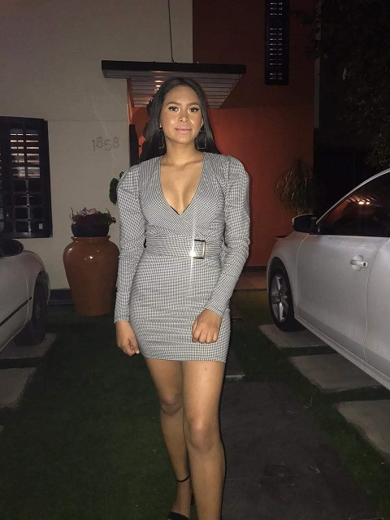

Mi Autobiografia

Mi nombre es Yosselin Pavon Tejeda, naci el 7 de septiembre de 2003 en el estado de veracruz,
actualmente tengo 16 años y me encuentro cursando cuarto semestre de preparatoria en la carrera de Programcion de software.
Actualmente vivo en tijuana baja california, tengo 3 hermanas, yo soy la numero 3.
fisicamente soy alta, mido 1.65 test morena cabello negro largo. tengo 2 cachorritas 1 se llama kira es pitbull blue y la otra se llama
kiara tiene 2 meses y es cocker spaniel.
lo que mas me gusta hacer es salir com mi amigas, convivie con mis cachorritas, salir a fiestas, ir a ranchos, montar a caballo, tirar, jugar futbol y beisbol. la materia que mas me gusta es programacion web y fisica.